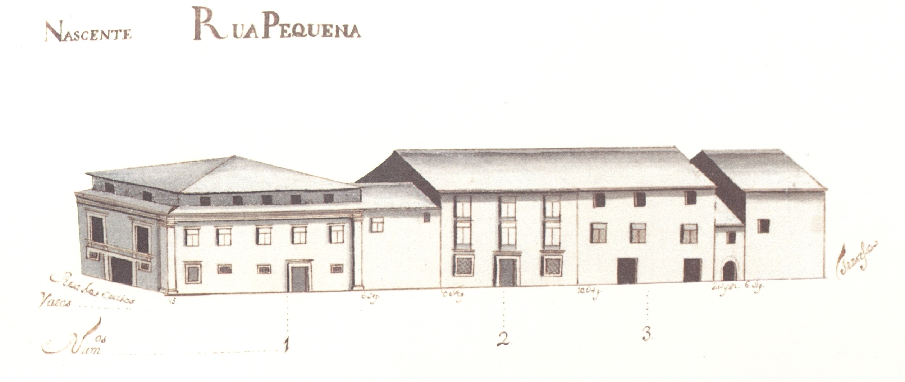

RuaPequena - vista nascente.

RuaPequena - vista poente.
Como o nome diz é uma pequenina rua que ligava a rua das Oucias com a travessa da rua do Forno para a do Poço .
Respeitando o reticulado romano era mais uma das artérias do bairro medieval adjacente à catedral .
Na Idade Média era já pequena e permitia um melhor acesso ao mercado da olaria , então existente junto ao transepto da Sé . Por isso recebeu esse nome.
No séc. XVI, o célebre humanista Diogo Teive emprazou ao Cabido a casa n.º 2, passando a ser conhecida por rua do Teive . Até que por volta de 1620 Mateus Fernando Farto , talvez senhor de forte importância política ou económica, veio para aqui viver, tanto bastando para ser conhecida pelo seu apelido.
No Mappa, contudo, aparece como rua Pequena . Sabemos ainda que talvez a partir do fim da Idade Média, e durante cerca de um século, também foi chamada de rua Painsalvos , por nela ter morado o abade da freguesia transmontana do mesmo nome.
Embora pequena, tem 3 edifícios notáveis: o prazo n.º 1, grande construção em pedra, com fachada bem organizada e um recuado em toda a extensão; o prazo n.º 2, casa com quase excesso de aberturas, (sem comparação com qualquer outra em todo o Mappa); e o prazo n.º 5, construção também em pedra, de 2 pisos, com mais um piso, no seu último vão Sul, quase semelhando uma torre.
Das 4 casas existentes quer no lado Nascente, quer no Poente, 3 e 4, respectivamente, são prazos do Cabido .
RuaPequena - vista nascente.
RuaPequena - vista poente.
| Número da Casa | Enfiteuta | Foro | Descrição |
|---|---|---|---|
| 1 | Enfiteuta não encontrado | Foro não encontrado | |
| 2 | Francisco de Sousa Castro | 875 reis e 2 galinhas | |
| 3 | D. Filipa Maria de Melo | 240 reis | |
| 4 | Enfiteuta não encontrado | Foro não encontrado | |
| 5 | Miguel Teodósio Fiuza de Sottomayor. viúvo de Amarante | 320 reis e 1 capão | Descrição não encontrada |
| 6 | Lic. Paulo de Sousa de Magalhães | 220 reis e 2 capões | |
| 7 | Lic. Paulo de Sousa de Magalhães | 220 reis e 2 capões | |
| 8 | Francisca Teresa Petiz | 70 reis e 1 galinha | |
| 9 | Enfiteuta não encontrado | Foro não encontrado |

Rua Pequena

Rua Pequena